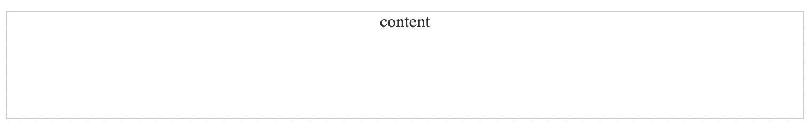
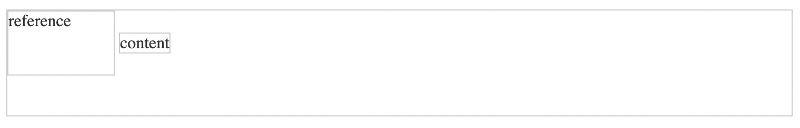
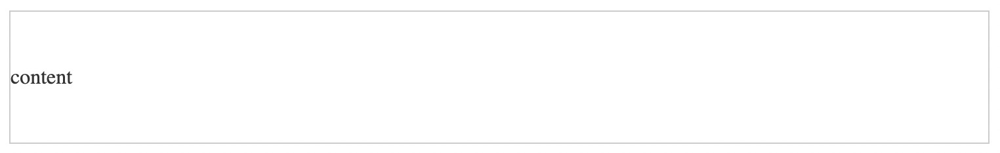
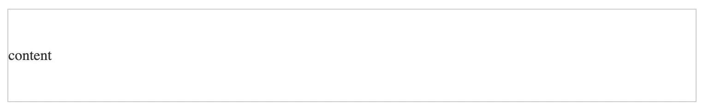
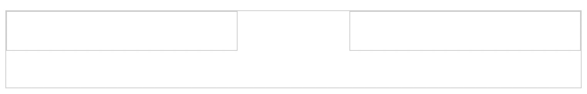
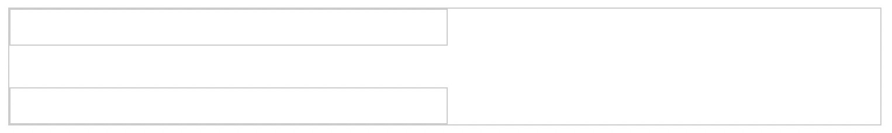

css知识梳理
css里面很多属性，你如果不了解就去使用会让你丈二和尚不到到头脑。这blog整理了平时开发用的css样式以及记录了一些使用时易出错的css样式，你值得拥有。
css的盒子模型
首先我们需要了解css的盒子模型，以便知道其作用域和影响效果。因为在css中一个视图所包含的内容就是css盒子模型的内容。
margin
margin是外边距，当前组建border和父控件之间的间隔。margin 没有背景颜色，是完全透明的。
margin-left
margin-right
margin-top
margin-bottom
1
2
3
4
5
6
7
8
9
10.box {
margin-left: 10px; // 设置左边距
margin-right: 11px; // 设置右边距
margin-top: 12px; // 设置上边距
margin-bottom: 13px; // 设置下边距
}
//等同
.box {
margin: 12px 11px 13px 10px;// (top right bottom left)
}
border
组建的边框。
border-top
border-right
border-bottom
border-left
1
2
3
4
5
6.box {
border-left: 10px solid #eeeeee; // 设置左边框
border-right: 11px solid #eeeeee; // 设置右边框
border-top: 12px solid #eeeeee; // 设置上边框
border-bottom: 13px solid #eeeeee; // 设置下边框
}
padding
padding是内边距，padding是包含在组建内部的，受background影响。
padding-left
padding-right
padding-top
padding-bottom
1
2
3
4
5
6
7
8
9
10.box {
padding-left: 10px; // 设置左边内间距
padding-right: 11px; // 设置右边内间距
padding-top: 12px; // 设置上边内间距
padding-bottom: 13px; // 设置下边内间距
}
//等同
.box {
padding: 12px 11px 13px 10px;// (top right bottom left)
}
content
内容区域，一般是文字、图片之类的。css样式可以设置它们的大小、颜色、背景等。
元素分类
行内元素（inline）
行内元素顾名思义就是在一行之内展示的元素，它不带换行，其大小仅仅被动的依赖于自身内容的大小。
组建介绍
1
2
3
4
5
6
7
8
9
10
11
12
13<span>
<a>
<br>
<b>
<strong>
<img>
<input>
<textarea>
<select>
<sup>
<sub>
<em>
<del>特性
2.1 不能设置高、宽以及行高（大小由内容决定）。
2.2 水平方向的padding和margin属性可以设置，但是垂直方向上的无效。
2.3 总是和相邻的行内元素在同一行上。
2.4 行内元素只能容纳其他行内元素。
块级元素（block）
块级元素会独占一行，多个块级元素会另起一行。
组建介绍
1
2
3
4
5
6
7
8
9
10
11
12<div>
<form>
<table>
<h1>~<h6>
<hr>
<p>
<ul>
<ol>
<address>
<center>
<pre>
<dl>特性
2.1 总是另起一行。
2.2 可以设置其高度、宽度、行高以及内外边距。
2.3 在不手动设置宽度的情况下，宽度默认为所在容器的100%。
2.4 可以容纳行内元素和其他块元素。
行内块元素（inline-block）
一种特殊的行内元素，它综合了行内和块级元素的特性。
组建介绍
1
2
3<img>
<input>
<td>特性
2.1 和相邻的元素在同一行，但是之间会有空白间隙。
2.2 默认的宽度是它们内容本身。
2.3 宽度、高度、行高、外边距和内边距都可以设置。
弹性伸缩盒（flex）
类似块级元素，但是对子元素有更加灵活的限制。
组建介绍
1
2// 无特定的组建，需要通过display来手动指定
display: flex;特性
2.1 宽度默认是100%，这个和inline-flex不同（子元素总和）
2.2 支持手动设置高宽，但是不支持设置line-height。
2.3 两个flex元素会占两行。
基本属性用法
1
2
3
4
5
6
7
8
9
10
11
12// 让所有弹性盒模型对象的子元素按比例展示，且忽略它们内部的内容大小
flex:1;
// 沿水平主轴让元素从左向右排列
flex-direction:row;
// 让元素沿垂直主轴从上到下垂直排列
flex-direction:column;
// (默认)元素不换行,比如：一个div宽度100%，设置此属性，2个div宽度就自动变成各50%
flex-wrap: nowrap;
// 元素换行,比如：一个div宽度100%，设置此属性，第二个div就在第二行了
flex-wrap: wrap;
// 元素在主轴（页面）上左右两端或者上下两端开始排列
justify-content:space-between; // justify-content的其他选项见css常用属性部分
内联弹性伸缩(inline-flex)
与flex的不同是，inline-flex类似于行内元素，但与行内元素不同的是，他可以设置宽度，并且子元素宽度之和大于父元素时，与flex结果相同。
组建介绍
1
2// 无特定的组建，需要通过display来手动指定
display: inline-flex;特性
2.1 默认的宽度受子元素决定。
2.2 两个inline-flex元素不会换行。
2.3 可以设置宽高，不支持设置line-height。
基本属性用法
同flex。
css的单位
相对长度
em
参考物是父元素的font-size，具有继承的特点。如果父元素没有设置使用浏览器默认的16px。
1
font-size: 1em; // 1em == 16px;2em == 32px;
rem
rem是相对于根元素html，我们只需要在根元素确定一个参考值，比如大小为10px，到时设置1.2rem就是12px，以此类推。
vw
css3新单位，view width的简写。假如可视屏幕宽度是1200px的话，那100vw就是1200px。
vh
css3新单位，view height的简写。假如可视屏幕高度是1200px的话，那100vh就是1200px。
%
这个就是按照父元素的百分比来设置大小。
rpx
小程序的单位，可以根据屏幕宽度进行自适应。
1
2// 规定屏幕宽为750rpx。iPhone6屏幕宽度为375px，共有750个物理像素。则750rpx = 375px = 750物理像素
width: 1rpx; //1rpx == 0.5px == 1物理像素
绝对长度
px
像素
cm
厘米mm
毫米
pt
point（1pt = 1/72英寸，1in = 96px = 2.54cm）
pc
pica，大约6pt
选择器
类选择器
通过元素的class选择，返回值是一个数组。
1 | .class |
id选择器
通过元素的id选择，返回值是单个元素
1 | #id |
元素选择器
1 | div // 选择所有div元素 |
：选择器
泛指一系列的属性、状态选择器
1 | :link // 选择所有未访问链接 |
css 常用属性
margin、padding
在讲盒子模型时说过了，且记住它们在行内元素和块级元素的不同效果。
border
border-top、border-right、border-bottom、border-left
1
2// 设置border的上部分的宽度、颜色
border-top: 1px solid #eeeeee; // 需要设置solid，否则默认是none此时1px不起作用borde-width、border-top-width
设置边框的尺寸
border-color、border-top-color
设置边框的颜色
border-raduis、border-top-raduis
设置边框的圆角幅度
border-style
设置边框的样式
1
2
3
4
5
6border-style: none; // 默认，无边框
border-style: hidden; // 同none，但是对于表用于解决边框冲突
border-style: dotted; // 点状
border-style: solid; // 实线
border-style: double; // 双线
border-style: dashed; // 虚线
box
box-shadow
1
box-shadow: 10px 10px 5px #888888; // 向右偏移10px，向下偏移10px，阴影部分5px
box-sizing
1
2box-sizing: border-box; // 对元素指定宽度和高度包括了 padding 和 border（为 IE 模型）
box-sizing: content-box; // 元素的填充和边框布局和绘制指定宽度和高度除外（为 W3C 标准模型）
float
设置浮动属性。
1 | float: right; // 元素向右浮动，浮动的元素会将行内和块级元素向左移动 |
display
其中的display:flex常用于小程序的居中布局（小程序开发的小伙伴要注意），当然需要配合flex的其他几个属性才能达到效果。
1 | display: inline; // 组建以行内元素展示 |
justify-content
元素在主轴（页面）上的排列。
1 | justify-content: center; // 元素在主轴（页面）上居中排列 |
align
text-align
指定元素文本的水平对齐方式。
1
2
3
4
5
6text-align: auto; // 默认值：由浏览器决定。
text-align: left; // 把文本排列到左边。默认值：由浏览器决定
text-align: right; // 把文本排列到右边
text-align: center; // 把文本排列到中间
// 实现两端对齐文本效果。此效果只会在文本出现自动换行时确保两端对齐，而不会出现换行后有参差不齐的情况。
text-align: justify;vertical-align
指定元素的垂直对齐方式。要弄懂其效果需要先了解文本的中线、基线、顶线和底线。直接上2张图图！


1
2
3
4
5
6vertical-align: top; // 把元素的顶端与行中最高元素的顶端对齐
vertical-align: text-top; // 把元素的顶端与父元素字体的顶端对齐
vertical-align: bottom; // 使元素及其后代元素的底部与整行的底部对齐
vertical-align: text-bottom; //
vertical-align: middle; // 把此元素放置在父元素的中部
vertical-align: baseline; // 把元素的底端与父元素字体的底端对齐
常见需求实现方式
水平居中
text-align实现方式，适用于inline或者inline-block、inline-table和inline-flex。
1
text-align:center;
效果图：

margin实现方式，适用于block块状元素
1
margin: 0 auto;
垂直居中
vertical-align实现方式
注意：
1.1 vertical-align的对齐方式是根据行内基线进行对准，如果行内只有一个元素，那么行内基线就是该元素的基线。如果有2个元素，那么基线会参考第一个元素。只有当行内2个元素都是用vertical-align:middle时，这个2个元素才能相对水平居中；只有当其中一个兄弟元素的高度和父亲高度一样时，这2个元素才能做到父亲容器内的水平居中。
1.2 vertical-align必须是用在display属性为inline-block的父亲元素内。
1
2
3
4<div style="display:inline-block;vertical-align:middle;">
<span style="display:inline-block;height:60%;width:100px;border:solid 1px #ccc;vertical-align:middle;">reference</span>
<span style="height:30px;vertical-align:middle;border:solid 1px #ccc;">content</span>
</div>效果图：

table-cell实现方式
1
2
3<div style="display:flex;">
<span style="align-self:center;">content</span>
</div>效果图：

self-algin实现方式
1
2
3<div style="display:table;">
<span style="display:table-cell;vertical-align:middle">content</span>
</div>效果图：

水平填充
flex实现方式
1
2
3
4<div style="display:flex;flex-direction:row;justify-content:space-between;">
<div style="display:inline-block;height:50%;width:40%;"></div>
<div style="display:inline-block;height:50%;width:40%;"></div>
</div>效果图：

垂直填充
flex实现方式
1
2
3
4<div style="display:flex;flex-direction:column;justify-content:space-between;">
<div style="display:inline-block;height:50%;width:40%;"></div>
<div style="display:inline-block;height:50%;width:40%;"></div>
</div>效果图：

底部固定
js+css实现方式
思路就是页面分为上面和底部两部分，上面的组件高度在页面加载时通过计算（屏幕高度-底部高度）获得。
css实现方式
1
2
3
4
5
6
7
8
9<div style="height:100%;overflow-y:scroll;">
<h2>上面部分</h2>
<div style="height:500px;background-color:#ccc;"></div>
<div style="height:70px;border:none;"></div>
</div>
<div style="position:fixed;bottom:0;height:70px;background-color:#595959;">
<h2>底部</h2>
</div>
悬浮
1 | position:fixed; // 用于固定位置 |
过滤型阴影
1 | filter: drop-shadow(0px 0px 10px #000); // 过滤型阴影 |
小程序.文本自动换行错乱问题
1 | // 在文本组件的样式里添加此属性 |
小程序.按钮没有垂直居中
1 | display: flex; |